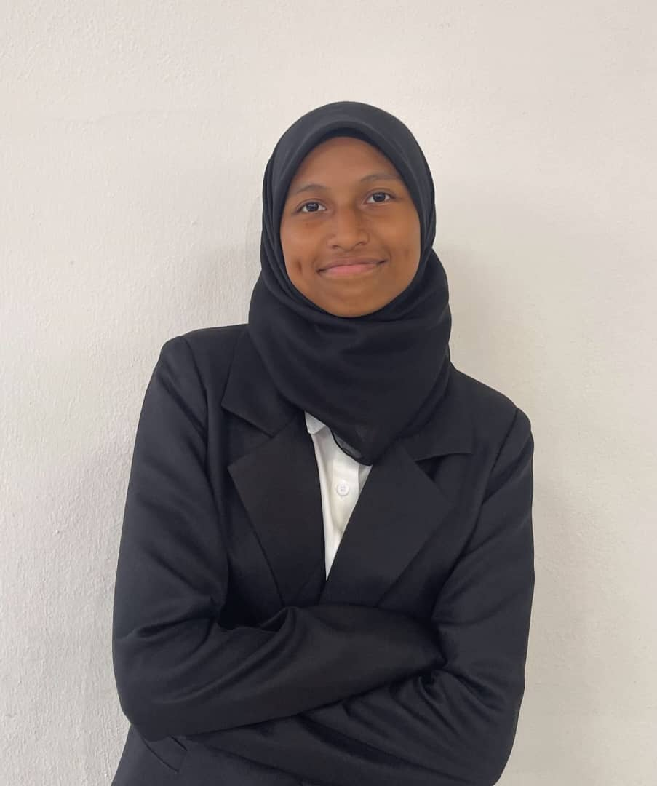

Home
Assalamualaikum and Hi there!😊 I'm Aida Adriana, a Diploma student of Information Management at UiTM Rembau. This page is where you can learn about me, my experiances and my journey so far. Please, play the audio while looking through at my personal website. Enjoy your read!
Click here to visit my Instagram profile. Feel free to explore and connect, or just say hi!
Biodata
| Field | Details |
|---|---|
| Name | Aida Adriana Binti Azilan |
| Age | 20 |
| Birthdate | 12 April 2004 |
| Hobbies | Drawing, sports, playing games, watching horror movies and listening to music |
| Fun Facts | I like cats and green is my favourite colour. I listen to rock, pop and hiphop type of music. I enjoy books that is written by Osamu Dazai. |
| Phone Number | 018-3575112 |
| aidaadriana004@gmail.com |
Experience
My journey has taken me through many experiences. Started with an Information Management student where I have learn lot of things, such as coding, using Microsoft PowerPoints, Excel and Word, and cataloging. Then, I joined Komander Kesatria UiTM Rembau. Being a part of Komander Kesatria UiTM Rembau has gave me a lot of oppurtunity to develop and polish some skills. It helps me to get out of my comfort zone and try a lot of things also gave me lot of experiences. Throughout joining the Komander I'm able to expand my experiance by doing a volunteer work. First, I volunteers in Percussion Se-Malaysia and then KARISMA UiTM. As a volunteer in Percussion, I have been assigned to help in managing the residence of percussion participants at UiTM Rembau. As for KARISMA, I was responsible in assisting the referee as a Linesmen. Other than that, I also have participated in Negeri Sembilan's Independence Parade, Furthermore, I have undergone an internship in Leasing department at AEON BIG Subang Jaya. These experiences have shaped me into someone who is good at many skills, such as teamwork, time management, coding, critical thinking, and adaptability and flexibility. Here are some of the pictures as a proof of my experiences.
Education
On the year of 2022, I'm a Computer Science student at SMK Putrajaya Presint 11 (1). As a Computer Science student, I decided to continue my study to something that is related with computer. And here I am pursuing my study as a Diploma student of Information Management. During my studies, I focused on cataloging, coding and other basic skills like using Microsoft PowerPoint, Excel, and Word. I also an active sport student, I have participated in Frisbee Mix of Ghombau Sports Day.
Family
I come from a loving family. My parents have always supported my career goals. I'm a second child of four siblings. I have an older sister, a younger sister and a younger brother. I'm closest to my younger siblings because we have lot in commons. I really love spending time with my family especially when we went to do something that is related to sports. I'm very lucky to have them in my life.
Gallery
Welcome to My Gallery!🌟
This gallery is a window into my passions, where every piece reflects a unique moment, thought, or perspective.